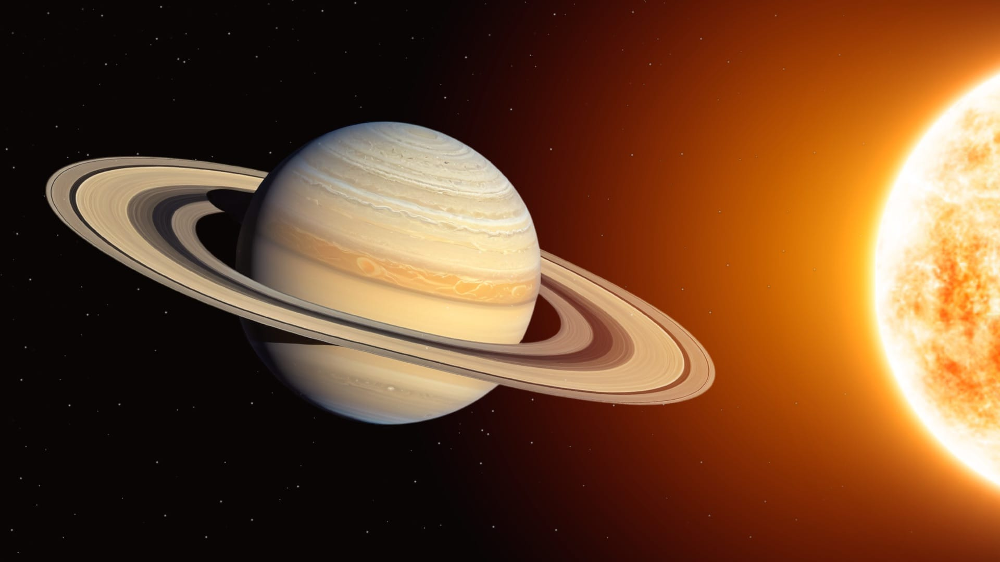
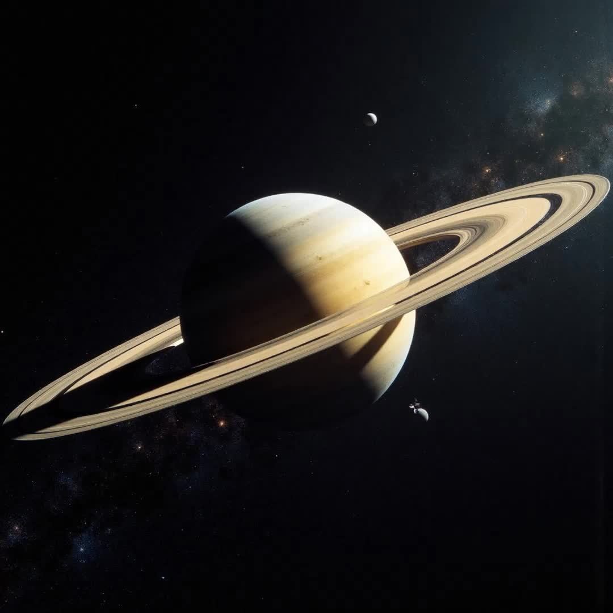

Сату́рн — шестая планета по удалённости от Солнца и вторая по размерам планета в Солнечной системе после Юпитера. Сатурн классифицируется как газовый гигант. Планета названа в честь римского бога земледелия. Астрономический символ Сатурна — ♄. В основном Сатурн состоит из водорода, с примесями гелия и следами воды, метана, аммиака и тяжёлых элементов. Внутренняя область представляет собой относительно небольшое ядро из железа, никеля и ряда других веществ («льдов»), покрытое тонким слоем металлического водорода и газообразным внешним слоем. Внешняя атмосфера планеты кажется из космоса спокойной и однородной, хотя иногда на ней появляются долговременные образования. Скорость ветра на Сатурне может достигать местами 1800 км/ч, что значительно больше, чем на Юпитере.

